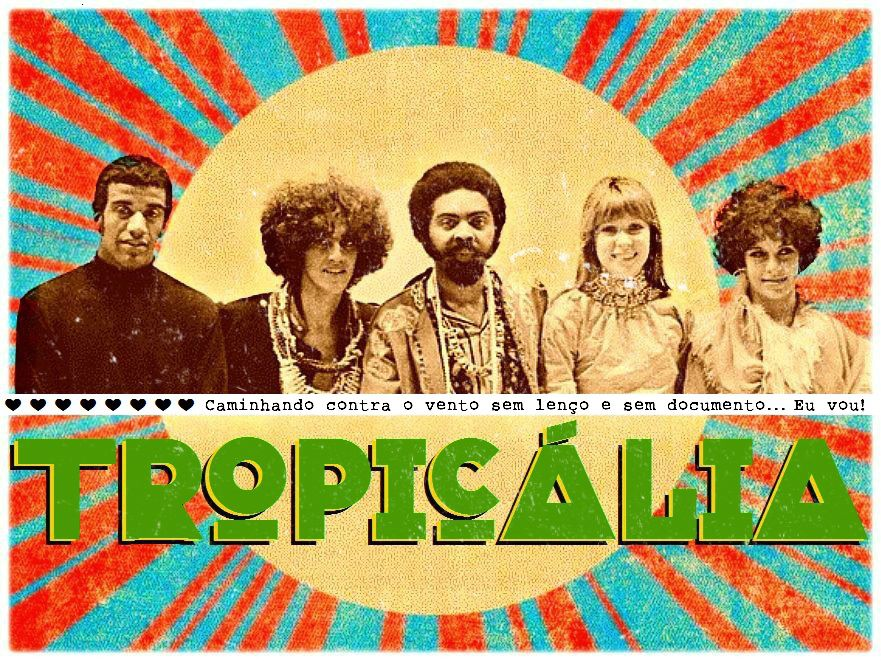

Topicália foi um movimento cultural de vanguarda que ocorreu no Brasil no final da década de 60 nas artes, principalmente na música. Libertário e revolucionário, o movimento tropicalista buscava se afastar um pouco do intelectualismo e aproximar a música brasileira dos aspectos da cultura popular. Mudou não somente a música, mas o panorama da cultura geral, em busca da modernidade do país. Teve grande influência do movimento concretista na literatura e nas artes plásticas. Além de mudanças na música popular, outros elementos culturais foram incorporadas à cultura brasileira como, por exemplo, o estilo das roupas. O movimento tropicalista termina com a prisão de Gilberto Gil e Caetano Veloso em 1968 pela Ditadura Militar. Seus representantes denunciaram a realidade brasileira e usaram de alegorias para fazer denúncias e fugir da censura. Artistas: Caetano Veloso, Gilberto Gil, Tom Zé, Gal Costa, Rogério Duprat, Maria Bethânia, Rita Lee, Chico Buarque, etc.
Fonte: Toda Matéria.
Andrei, Gabriel, Isabeli, Joana, Júlia e Kauane.